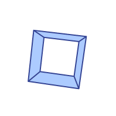
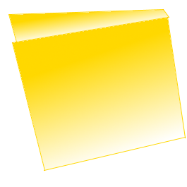

File
Video
Canvas
Preferences
Tools
RAW
Canvas Context Menu
Create Line
...
...
Resource Context Menu
Add Resource...
Add Blank Resource
>>Insert Blank Line Series
>>>>Insert Blank Line System
>>>>>>Insert Blank Line
 Open
Save
Save As...
Set Canvas Size \/
SD
640x360
HD
720x480
WHD
1080x720
FHD
1280x720
2k
1980x1080
Custom
x
Set Framerate (FPS) \/
1/10
10 FPS
On One's
12 FPS
Broadcast(rounded)(On Two's)
24 FPS
Gaming (old)
30 FPS
Gaming (deprecated)
60 FPS
Gaming (new)
144 FPS
Custom
Center Canvas
Reset Canvas Position
Local Framerate \/
10 FPS
100 MS
24 FPS
41.6667 MS
30 FPS
33.3333 MS
60 FPS
16.6667 MS
144 FPS
6.9444 MS
Custom
Interleave Context Menus (developer)
""
Resources
(╯°□°）╯︵ ┻━┻ Welp. You don't have canvas on your browser :'V ¯\_(ツ)_/¯